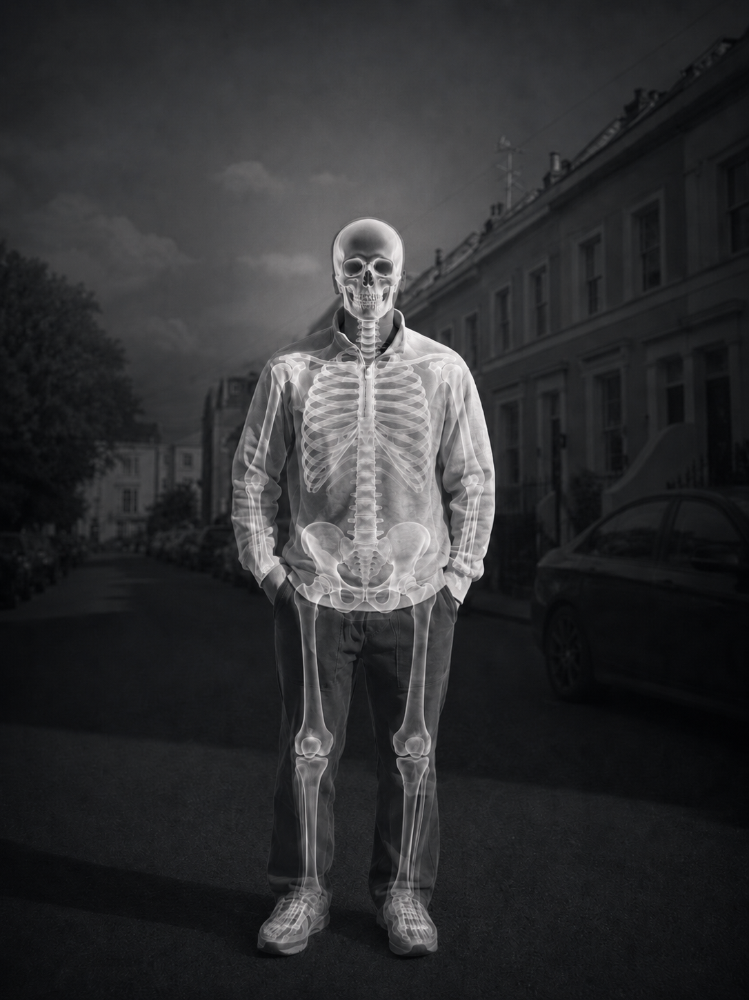
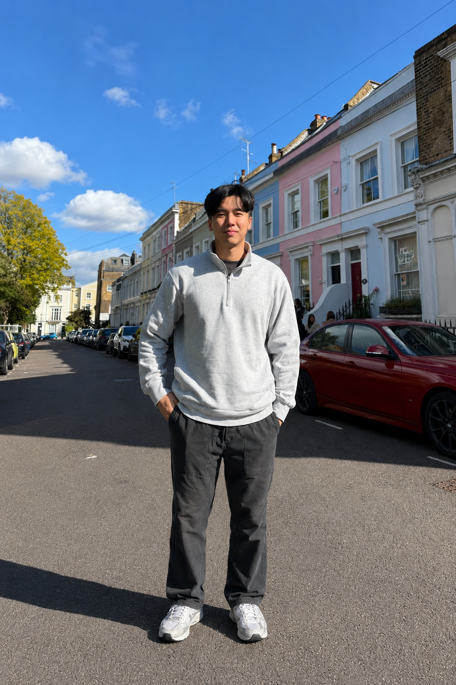
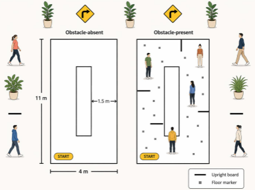
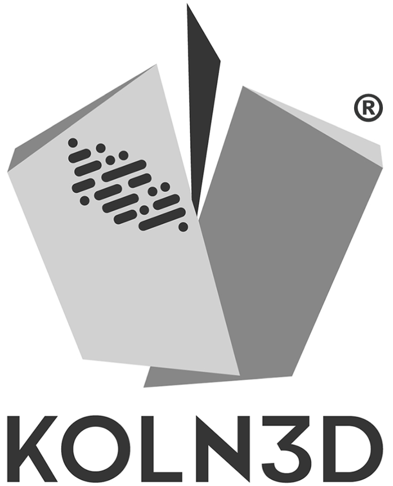

01 / 04
In progress
fNIRS Classification for Complex Walking Tasks
Machine learning pipeline for classifying neurotypical and neurodivergent participants using fNIRS-derived features from complex walking tasks.
Explore ProjectBiomedical Engineer · Biosignals · Robotics · AI
I work where engineering meets the human body, translating physiological signals, medical robotics, and AI into technologies that support real clinical outcomes.


01About
Hi, I'm Nate, a biomedical engineer from Hong Kong who has spent most of his academic journey in the UK.
I graduated with First Class Honours in Biomedical Engineering from City St George's, University of London, where I built a strong technical foundation in signal processing, microcontrollers, biomedical instrumentation, medical physics, and medical device development. These experiences shaped my interest in how engineering can be used to understand the human body, improve clinical workflows, and develop technologies that support better patient outcomes.
I am currently pursuing an MSc in Medical Robotics and Artificial Intelligence at UCL, focusing on the intersection of biosignals, medical devices, data analysis, robotics, and medtech innovation.
My work sits between technical development and healthcare translation. I am interested in understanding physiological signals, developing engineering systems, and communicating how medical technologies can create real-world clinical and commercial value.
02Academics
Postgraduate medical robotics and AI, built on a first-class biomedical engineering foundation.
02.1 Postgraduate
MSc Medical Robotics and Artificial Intelligence
02.2 Undergraduate
BEng Biomedical Engineering
03Projects

01 / 04
In progress
Machine learning pipeline for classifying neurotypical and neurodivergent participants using fNIRS-derived features from complex walking tasks.
Explore Project04Experience
Practical industry experience across medical technology, operations, and commercial strategy, focused on workflow improvement, system delivery, and measurable contribution.

EXP 01KOLN 3D
Built automated clinical and production workflows for a medical metal 3D-printing company, supporting post-operative implant feedback collection, patient/surgeon outcome tracking, and production planning.
Key deliverables
EXP 02Golden Cedar Ltd
Supported end-to-end order fulfilment and coordinated supply chain operations across quality control, logistics, invoicing, and international customer delivery.
Key deliverables
EXP 03Audrey Market
Planned e-commerce marketing campaigns, supported merchandise strategy, managed inventory clearance, and contributed to measurable improvements in sales and customer engagement.
Key deliverables
05Contact / CV
If you are hiring for biosignals, medical robotics, AI, or medtech innovation roles, or simply want to talk about research, I'd like to hear from you.